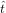
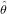

) is given by
) is given by
Abstract
This Chapter introduces statistical tools to extract geologically meaningful information from fission-track (FT) data using both the external detector and LA-ICP-MS methods. The spontaneous fission of 238U is a Poisson process resulting in large single grain age uncertainties. To overcome this imprecision, it is nearly always necessary to analyse multiple grains from a single sample. The degree to which the analytical uncertainties can explain the observed scatter of the single grain data can be visually assessed on a radial plot, and objectively quantified by a Chi-square test. For sufficiently low values of the Chi-square statistic (or sufficiently high p-values), the pooled age of all the grains gives a suitable description of the underlying ‘true’ age population. Samples may fail the Chi-square test for several reasons. A first possibility is that the true age population does not consist of a single discrete age component, but is characterised by a continuous range of ages. In this case, a ‘random effects’ model can constrain the true age distribution using two parameters: the ‘central age’ and the ‘(over)dispersion’. A second reason why FT datasets might fail the Chi-square test is if they are underlain by multimodal age distributions. Such distributions may consist of discrete age components, continuous age distributions, or a combination of the two. Formalised statistical tests such as Chi-square can be useful in preventing overfitting of relatively small datasets. However, they should be used with caution when applied to large datasets (including length measurements) which generate sufficient statistical ‘power’ to reject any simple yet geologically plausible hypothesis.
238U is the heaviest naturally occurring nuclide in the Solar System. Like all nuclides heavier than 208Pb, it is
physically unstable and undergoes radioactive decay to smaller, more stable nuclides. 99.9998% of the 238U nuclei
shed weight by disintegrating into eight He-nuclei (α-particles) and a 206Pb atom, forming the basis of the U-Pb and
U-Th-He clocks. The remaining 0.0002% of the 238U undergoes spontaneous fission, forming the basis of FT
geochronology (Price and Walker 1963, Fleischer et al. 1965). Because spontaneous fission of 238U is such a rare
event, the surface density of fission tracks (in counts per unit area) is 10-11 orders of magnitude lower than the
molar abundances of 238U and 4He, respectively. So whereas the U-Pb and (U-Th)/He methods are based on mass
spectrometric analyses of billions of Pb and He atoms, FT ages are commonly based on manual counts of at most a
few dozen features. Due to these low numbers, the FT method is a low precision technique. Whereas the
analytical uncertainty of U-Pb and (U-Th)/He ages is expressed in % or o-units, it is not uncommon for
single-grain FT age uncertainties to exceed 10% or even 100% (Sect. 6.2). Early attempts to quantify these
uncertainties (McGee and Johnson 1979, Johnson et al. 1979) were criticised by Green (1981a,b), who
subsequently engaged in a fruitful collaboration with two statisticians –Geoff Laslett and Rex Galbraith– to
eventually solve the problem. Thanks to the combined efforts of the latter two people, it is fair to say
that the statistics of the FT method are better developed than those of any other geochronological
technique. Several statistical tools that were originally developed for the FT method have subsequently
found applications in other dating methods. Examples of this are the radial plot (Sect. 6.3), which is
routinely used in luminescence dating (Galbraith 2010b), random effects models (Sect. 6.4.2), which
have been generalised to (U-Th)/He (Vermeesch 2010) and U-Pb dating (Rioux et al. 2012), and
finite mixture models (Sect. 6.5), which were adapted for detrital U-Pb geochronology (Sambridge and
Compston 1994).
The statistical analysis of fission tracks is a rich and diverse field, and this short Chapter cannot possibly cover all its intricacies. Numerate readers are referred to the book by Galbraith (2005), which provides a comprehensive, detailed, and self-contained review of the subject, from which the present Chapter heavily borrows. The Chapter comprises five Sections, which address statistical issues of progressively higher order. Sect. 6.2 introduces the FT age equation using the External Detector Method (EDM), which offers the most straightforward and elegant way to estimate single-grain age uncertainties, even in grains without spontaneous fission tracks. Section 6.3 compares and contrasts different ways to visually represent multi-grain assemblages of FT data, including kernel density estimates, cumulative age distributions, and radial plots. Sect. 6.4 reviews the various ways to estimate the ‘average’ age of such multi-grain assemblages, including the arithmetic mean age, the pooled age, and the central age. This Section will also introduce a Chi-square test for age homogeneity, which is used to assess the extent to which the scatter of the single-grain ages exceeds the formal analytical uncertainties obtained from Sect. 6.2. This leads to the concept of ‘overdispersion’ (Sect. 6.4.2) and more complex distributions consisting of one or several continous and/or discrete age components. Sect. 6.5 discusses three classes of mixed effects models to resolve discrete mixtures, continuous mixtures, and minimum ages respectively. It will show that these models obey the classical bias-variance tradeoff, which will lead to a cautionary note regarding the use of formalised statistical hypothesis tests for FT interpretation. Finally, Sect. 6.6 will give the briefest of introductions to some statistical aspects of thermal history modelling, a more comprehensive discussion of which is provided in Chapt. 3 (Ketcham 2018). In recent years, several fission track laboratories around the world have abandoned the elegance and robustness of the EDM for the convenience of ICP-MS-based measurements. Unfortunately, the statistics of the latter are less straightforward and less well developed than the EDM. Sect. 6.7 presents an attempt to deal with this problem.
The fundamental FT age equation is given by:
|
| (6.1) |
where λD is the total decay constant of 238U (1.55125×10-10yr-1; Jaffey et al. 1971), λf is the fission decay constant (7.9-8.7×10-17yr-1; Holden and Hoffman 2000)1., ρs is the density (tracks per unit area) of the spontaneous fission tracks on an internal crystal surface, [238U] is the current number of 238U atoms per unit volume, and R is etchable range of the fission tracks, which is half the equivalent isotropic FT length. [238U] can be determined by irradiating the (etched) sample with thermal neutrons in a reactor. This irradiation induces synthetic fission of 235U in the mineral, producing tracks that can be monitored by attaching a mica detector to the polished mineral surface and etching this monitor subsequent to irradiation. Using this External Detector Method (EDM), Eq. 6.1 can be rewritten as:
|
| (6.2) |
where ζ is a calibration factor (Hurford and Green 1983), ρi is the surface density of the induced fission tracks in the mica detector, and ρd is the surface density of the induced fission tracks in a dosimeter glass of known (and constant) U concentration. The latter value is needed to ‘recycle’ the calibration constant from one irradiation batch to the next, as neutron fluences might vary through time, or within a sample stack. ρs, ρi and ρd are unknown but can be estimated by counting the number of tracks N* over a given area A* (where ‘*’ is either ‘s’ for ‘spontaneous’, ‘i’ for ‘induced’ or ‘d’ for ‘dosimeter’):
|
| (6.3) |
It is customary for the spontaneous and induced fission tracks to be counted over the same area (i.e., As = Ai),
either using an automated microscope stage (Smith and Leigh-Jones 1985, Dumitru 1993) or by simply
repositioning the mica detector on the grain mount after etching (Jonckheere et al. 2003). Using these
measurements, the estimated FT age ( ) is given by
|
| (6.4) |
where  is obtained by applying Eq. 6.4 to an age standard and rearranging. Eqs. 6.2 and 6.4 assume that the
ratio of the etchable range (R) between the grain and the mica detector is the same for the sample and the
standard. Violation of this assumption leads to apparent FT ages of unclear geological significance. This is an
important caveat as samples with shortened tracks are very common. See Sect. 6.6 and Chapt. 3 (Ketcham 2018)
for further details on how to deal with this situation. The standard error s[
is obtained by applying Eq. 6.4 to an age standard and rearranging. Eqs. 6.2 and 6.4 assume that the
ratio of the etchable range (R) between the grain and the mica detector is the same for the sample and the
standard. Violation of this assumption leads to apparent FT ages of unclear geological significance. This is an
important caveat as samples with shortened tracks are very common. See Sect. 6.6 and Chapt. 3 (Ketcham 2018)
for further details on how to deal with this situation. The standard error s[ ] of the single grain age estimate is given
by standard first order Taylor expansion:
] of the single grain age estimate is given
by standard first order Taylor expansion:
|
| (6.5) |
Where it is important to point out that all covariance terms are zero because , Ns, Ni and Nd are independent variables2. To simplify the calculation of the partial derivatives, we note that ln(1 + x) ≈ x if x ≪ 1 so that, for reasonably low Ns∕Ni values, Eq. 6.4 reduces to
|
| (6.6) |
Using this linear approximation, it is easy to show that Eq. 6.5 becomes:
|
| (6.7) |
The standard error of the calibration constant  is obtained by repeated measurements of the age standard and
will not be discussed further. The standard errors of Ns, Ni and Nd are governed by the Poisson distribution, whose
mean equals its variance. This crucial property can be illustrated with a physical example in which a mica print
attached to a dosimeter glass is subdivided into a number of equally sized squares (Fig. 6.1, left). Counting the
number of induced fission tracks Nd in each square yields a skewed frequency distribution whose mean indeed equals
its variance (Fig. 6.1, right). Applying this fact to Eq. 6.7, we can replace s[Ns]2 with Ns, s[Ni]2 with Ni
and s[Nd]2 with Nd, and obtain the following expression for the standard error of the estimated FT
age:
is obtained by repeated measurements of the age standard and
will not be discussed further. The standard errors of Ns, Ni and Nd are governed by the Poisson distribution, whose
mean equals its variance. This crucial property can be illustrated with a physical example in which a mica print
attached to a dosimeter glass is subdivided into a number of equally sized squares (Fig. 6.1, left). Counting the
number of induced fission tracks Nd in each square yields a skewed frequency distribution whose mean indeed equals
its variance (Fig. 6.1, right). Applying this fact to Eq. 6.7, we can replace s[Ns]2 with Ns, s[Ni]2 with Ni
and s[Nd]2 with Nd, and obtain the following expression for the standard error of the estimated FT
age:
![┌ -----------------------
││ ( )2
s[ˆt] ≈ tˆ∘ s[ζˆ] + -1-+ -1-+ -1-
ˆζ Ns Ni Nd](index12x.png) | (6.8) |
Note that this equation breaks down if Ns = 0. There are two solutions to this problem. The easiest way is to replace Ns and Ni with Ns+1/2 and Ni+1/2, respectively (Galbraith 2005, p.80). A second (and preferred) approach is to calculate exact (and asymmetric) confidence intervals. See Galbraith (2005, p.50) for further details about this procedure.
The single grain uncertainties given by Eq. 6.8 tend to be very large. For example, a grain containing just 4 spontaneous fission tracks (i.e., Ns=4) is associated with an analytical uncertainty of /4=50% even ignoring the analytical uncertainty associated with the ζ-calibration constant, the dosimeter glass, or the induced FT count. The single grain age precision of the FT method, then, is orders of magnitude lower than that of other established geochronometers such as 40Ar/39Ar or 206Pb/238U, which achieve percent or permil level uncertainties. To overcome this limitation and ‘beat down the noise’, it is important that multiple grains are analysed from a sample and averaged using methods described in Sect. 6.4. Multi-grain assemblages of FT data are also very useful for sedimentary provenance analysis and form the basis of a new field of research called ‘detrital thermochronology’ (Bernet 2018, Carter 2018). Irrespective of the application, it is useful for any multi-grain FT dataset to first be assessed visually. This Section will introduce three graphical devices to do this: cumulative age distributions, (kernel) density estimates and radial plots. To illustrate these graphical devices as well as the different summary statistics of Sect. 6.4, consider the four different geological scenarios shown in Fig. 6.2:
The cumulative distribution function cdf(x) describes the fraction of the detrital age population whose age is less than or equal to x:
|
| (6.9) |
Under Scenario I, the cdf consists of a simple step function, indicating that 0% of the grains are younger, and
100% are older than the extrusive age (Fig. 6.2.I-a). Under Scenario II, the cdf is spread out over a wider range, so
that 90% of the ages are between 90 and 210 Ma (Fig. 6.2.II-a). Under Scenario III (Fig. 6.2.III-a), the cdf consists
of two discrete steps at 15 and 75 Ma, the relative heights of which depend on the hypsometry of the river
catchment and the spatial distribution of erosion (Vermeesch 2007). Finally, under Scenario IV, the cdf
consists of a discrete step from 0 to 50% at 15 Ma, followed by a sigmoidal rise to 100% at 75Ma
(Fig. 6.2.IV-a).
In reality, the cdfs of Scenarios I-IV are, of course, unknown and must be estimated from sample data, by means of an empirical cumulative distribution function (ecdf), which may be referred to as a Cumulative Age Distribution (CAD) in a geochronological context (Vermeesch 2007). A CAD is simply a step function in which the single grain ages ( j, for j=1→n) are plotted against their rank order:
|
| (6.10) |
where 1(TRUE) = 1 and 1(FALSE) = 0. In contrast with the true cdfs, the measured CADs are invariably smoother, as the analytical uncertainties spread the ages out over a greater range. Because the uncertainties of FT ages are so large, the difference between the measured CADs and the true cdfs is very significant. Sections 6.4 and 6.5 of this Chapter present several algorithms to extract the key parameters of the true age distribution (i.e, the cdfs) from the measurement distribution (CADs).
The probability density function (pdf) is defined as the first derivative of the cdf:
|
| (6.11) |
Under Scenario I, the pdf is a discrete peak of zero width and infinite height, marking the timing of the volcanic eruption (Fig. 6.2.I-b). In contrast, under Scenario II, the pdf is a smooth (a)symmetric bell curve reflecting the spread in closing temperatures and, hence, ages, associated with the range of Cl/F-ratios present in apatites of this slowly cooled pluton (Fig. 6.2.II-b). Under Scenario III, the pdf consists of two discrete spikes corresponding to the two volcanic events (Fig. 6.2.III-b). Finally, under Scenario IV, the pdf effectively combines those of Scenarios I and II (Fig. 6.2.IV-b). The pdfs, like the cdfs discussed before, are unknown but can be estimated from sample data. There are several ways to do this. Arguably the simplest of these is the histogram, in which the observations are grouped into a number of discrete bins. Kernel Density Estimates (KDEs) are a continuous alternative to the histogram, which are constructed by arranging the measurements from young to old along the time axis, adding a Gaussian ‘bell curve’ (or any other symmetric shape) on top of them, and then summing those to create one continuous curve (Silverman 1986, Vermeesch 2012). The standard deviation of the Gaussian ‘kernel’ is called the ‘bandwidth’ of the estimator and may be chosen through a host of different approaches, a proper discussion of which falls outside the scope of this review (Abramson 1982, Silverman 1986, Botev et al. 2010, Vermeesch 2012). An important feature of all these algorithms is that the bandwidth monotically decreases with increasing sample size. Please note that the so-called ‘Probability Density Plot’ (PDP, not to be confused with pdf!), in which the analytical uncertainty (or 0.6 times the analytical uncertainty, Brandon 1996) is used as a ‘bandwidth’ does not possess this feature. Therefore PDPs are not proper density estimates and consequently their use is not recommended (Galbraith 1998, Vermeesch 2012). Like the CAD, which is a smooth version of the cdf, KDEs (and histograms) are smooth versions of the pdf. But whereas the CAD has only been smoothed once, histograms and KDEs are smoothed twice, once by the analytical uncertainties, and once by the width of the bins or kernels. Because the analytical uncertainties of FT data are so big, the components of FT age distributions are often spread out very widely, resulting in poorly resolved KDEs (blue curves in Figs. 6.2.b).
Single grain fission track age uncertainties are not only very large, they generally are also variable (‘heteroscedastic’). Due to a combination of Poisson sampling statistics and variable U-concentrations, the analytical uncertainties propagated using Eq. 6.8 may vary over an order of magnitude within the same sample. Neither CADs nor KDEs (let alone PDPs) are able to capture this uncertainty. The radial plot is a graphical device that was specifically designed to address this issue (Galbraith 1988, 1990, Dunkl 2002, Vermeesch 2009). Given j=1...n numerical values zj and their analytical uncertainties σj, the radial plot is a bivariate (xj,yj) scatterplot setting out a standardised estimate (yj = (zj -z∘)∕σj, where z∘ is some reference value) against the single grain precision (xj = 1/σj). For FT data using the EDM3, it is convenient to use the following definitions for zj and σj (Galbraith 1990):
|
| (6.12) |
and
|
| (6.13) |
Thus, precise measurements plot towards the right-hand side of the radial plot whilst imprecise
measurements plot closer to the origin. A single grain age may be read off by extrapolating a line from
the origin (0,0) of the radial plot through the sample point (xj,yj) to a radial scale plotted at some
convenient distance. Similarly, the analytical uncertainty can be obtained by extrapolating lines from the
origin to the radial scale through the top and the bottom of an imaginary 2σ-error bar added to each
sample point. Finally, drawing two parallel lines at 2σ distances from either side of the origin allow the
analyst to visually assess whether all the single grain ages within a sample agree within the analytical
uncertainties.
Revisiting Scenario I of Fig. 6.2, the data points plot within a 2σ band on the radial plot, consistent with a single discrete age component (Fig. 6.2.I-c). Under Scenario II, the data are more dispersed and scatter beyond the 2σ band, reflecting the dispersion of the underlying geological ages (Fig. 6.2.II-c). Under Scenario III, the data are randomly scattered along two linear trajectories which represent the two volcanic events (Fig. 6.2.III-c). Finally, Scenario IV combines the radial patterns of Scenarios I and II, as expected (Fig. 6.2.IV-c). Of all the summary plots in Fig. 6.2, the radial plot contains the largest amount of quantitative information about the age measurements and about the underlying geological ages. Using the graphical design principles of Tufte (1983), the radial plot exhibits a far higher ‘ink-to-information ratio’ than the CAD, KDE or histogram. We will therefore use it as a basis from which to introduce the summary statistics discussed in the next Section of this Chapter.
The previous Sections have shown that the presence of large and highly variable analytical uncertainties can easily obscure the underlying age distribution and all the geologically meaningful information encoded by it. The next two Sections will introduce some useful summary statistics which can be used to disentangle that geologically meaningful information from the random noise produced by the Poisson counting uncertainties.
Let us begin with the single discrete age component in Scenario I of the previous Section. Several approaches can be used to estimate this age from a set of noisy sample data. Panels I-a, I-b and I-c of Fig. 6.2 show that the single grain age estimates follow an asymmetric probability distribution (symmetric when plotted on a logarithmic scale) which is skewed toward older ages. This is a consequence of the fact that, if Nsj and Nij are sampled from two independent Poisson distributions with expected values ρs and ρi, respectively, then the conditional probability of Nsj on Nsj + Nij follows a Binomial distribution:
|
| (6.14) |
where θ ≡ ρs∕(ρs + ρi) and (a b) is the Binomial coefficient. Given a sample of n sets of FT counts, this leads to the following (log-)likelihood function for θ:
|
| (6.15) |
where fj(θ) is the probability mass function for the jth grain defined in Eq. 6.14. As a first approach to obtaining an ‘average’ age, one might be tempted to simply take the arithmetic mean of the single grain age estimates. Unfortunately, the arithmetic mean does not cope well with outliers and asymmetric distributions and therefore yields poor estimates of the geological age. The geometric mean fares much better. It is closely related to the ‘central age’, which is discussed in Sect. 6.4.2. The ‘pooled age’ is obtained by maximising Eq. 6.15 to obtain a ‘maximum likelihood’ estimate ( ), and substituting e for Ns∕Ni in Eq. 6.2, where Ns = ∑ j=1nNsj and Ni = ∑ j=1nNij. This is equivalent to taking the sum of all the spontaneous and induced tracks, respectively, and treating these as if they belonged to a single crystal. This procedure yields the correct age if the true ages are indeed derived from a single discrete age component (i.e., Scenario I). However, if there is any dispersion of the true FT ages, as is the case under Scenario II, then the pooled age will be biased towards values that are far too old. Whether this is the case or not can be verified using a formalised statistical hypothesis test. Galbraith (2005, p.46) shows that in the absence of excess dispersion, the following statistic:
|
| (6.16) |
follows a Chi-square distribution with n-1 degrees of freedom. The probability of observing a value greater than c2 under this distribution is called the p-value and can be used to formally test the assumption of zero dispersion. A cutoff of 0.05 is often used as a criterion to abandon the single grain age model of Scenario I and, hence, the pooled age.
A more meaningful estimate for Scenario II is obtained using a two-parameter ‘random effects’ model, in which the true ρs∕ρi-ratio is assumed to follow a log-normal distribution with location parameter μ and scale parameter σ (Galbraith and Laslett 1993):
|
| (6.17) |
This model gives rise to a two-parameter log-likelihood function:
|
| (6.18) |
where the probability mass function fj(μ,σ2) is defined as:
|
| (6.19) |
in which the FT ratios are subject to two sources of variation: the Poisson uncertainty described by Eq. 6.15 and
an ‘(over)dispersion’ factor σ. Maximising Eq. 6.18 results in two estimates and  and their respective standard
errors. Substituting e for Ns∕Ni in Eq. 6.2 produces the so-called ‘central age’.
and their respective standard
errors. Substituting e for Ns∕Ni in Eq. 6.2 produces the so-called ‘central age’.  estimates the overdispersion, and
quantifies the excess scatter of the single grain ages which cannot be explained by the Poisson counting statistics
alone. This dispersion can be just as informative as the central age itself, as it encodes geologically meaningful
information about the compositional heterogeneity and cooling history of the sample. In the absence of excess
dispersion, i.e. if =0, the central age equals the pooled age, so there is not really any reason to use the pooled age
at all.
estimates the overdispersion, and
quantifies the excess scatter of the single grain ages which cannot be explained by the Poisson counting statistics
alone. This dispersion can be just as informative as the central age itself, as it encodes geologically meaningful
information about the compositional heterogeneity and cooling history of the sample. In the absence of excess
dispersion, i.e. if =0, the central age equals the pooled age, so there is not really any reason to use the pooled age
at all.
A FT dataset may fail the Chi-square test introduced in the previous Section for different reasons. The true ages may exhibit excess scatter according to Eq. 6.18. Or it may be so that there are more than one age component (Galbraith and Green 1990, Galbraith and Laslett 1993). These components could either be discrete age peaks (Scenario III), or they could be any combination of discrete and continuous age components (Scenario IV).
Finite mixture models are a generalisation of the discrete age model of Scenario I in which the true ages are not derived from a single, but from multiple age populations (Galbraith and Green 1990). Scenario III is an example of this with two such components. In contrast with the common age model of Scenario I, which is completely described by a single parameter (θ, or the pooled age), and the random effects model, which comprises two parameters (μ and σ, or the central age and overdispersion), the finite mixture of Scenario III requires three parameters. These are the age of the first component, the age of the second component, and the proportion of the grains belonging to the first component. The proportion belonging to the second component is simply the complement of the latter value. Generalising to N components, the log-likelihood function becomes:
|
| (6.20) |
where fj(θk) is given by Eq. 6.14. Eq. 6.20 can be solved numerically. Applying it to the single component
dataset of Scenario I again yields the pooled age as a special case. The detrital FT ages in Scenario III clearly fall
into two groups so it is quite evident that there are two age components. Unfortunately the situation is not always
this clear. Due to the large single grain age uncertainties discussed in Sect. 6.2, the boundaries between
adjacent age components are often blurred, making it difficult to decide how many ‘peaks’ to fit. Several
statistical approaches may be used to answer this question. One possibility is to use a log-likelihood
ratio test. Suppose that we have solved Eq. 6.20 for the case of N=2 age components, and denote the
corresponding maximum log-likelhood value as  2. We then consider an alternative model with N=3
components. This results in two additional parameters (π2 and θ3) and a new maximum log-likelihood
value, 3. We can assess whether the three component model is a significant improvement over the
two component fit by comparing twice the difference between 3 and 2 to a Chi-square distribution
with two degrees of freedom (because we have added two additional parameters) and calculating the
corresponding p-value like before. An illustration of the log-likelihood ratio test is provided in Sect. 6.5.2. An
alternative approach is to maximise the so-called Bayes Information Criterion (BIC), which is defined
as
2. We then consider an alternative model with N=3
components. This results in two additional parameters (π2 and θ3) and a new maximum log-likelihood
value, 3. We can assess whether the three component model is a significant improvement over the
two component fit by comparing twice the difference between 3 and 2 to a Chi-square distribution
with two degrees of freedom (because we have added two additional parameters) and calculating the
corresponding p-value like before. An illustration of the log-likelihood ratio test is provided in Sect. 6.5.2. An
alternative approach is to maximise the so-called Bayes Information Criterion (BIC), which is defined
as
|
| (6.21) |
where max is the maximum log-likelihood of a model comprising p parameters and n grains. A worked example
of this method is omitted for brevity and the reader is referred to Galbraith (2005, p.91) for further
details.
So far we have considered pdfs consisting of a single discrete age peak (Scenario I), a single continuous age distribution (Scenario II) and multiple discrete age peaks (Scenario III). The logical next step is to consider multiple continuous age distributions (Jasra et al. 2006). In principle such models can be obtained by maximising the following likelihood function
|
| (6.22) |
where fj(μk,σk2) is given by Eq. 6.19. However, in reality this is often impractical due to the high number of
parameters involved, which require exceedingly large datasets. In detrital geochronology, the analyst rarely knows
that the data are underlain by a continuous mixture and so it is tempting to reduce the number of unknown
parameters by simply assuming a discrete mixture. Unfortunately, this is fraught with problems as well since there is
no upper bound on the number of discrete age components to fit to a continuous dataset. To illustrate this point, let
us reconsider the dataset of Scenario II, this time applying a finite mixture model rather than the
random effects model of Sect. 6.4.2. For a small sample of n=10 grains, the Chi-square test for age
homogeneity yields a p-value of 0.47, which is above the 0.05 cutoff and thus provides insufficient evidence to
reject the common age model (Table 6.1 and Fig. 6.3.a). Increasing the sample size to n=25 results
in a p-value of 0.03, justifying the addition of additional model parameters (Fig. 6.2.I-c). Further
increasing the sample size to n=100 reduces the likelihood of the common age model (Eq. 6.15) and results
in a p-value of 0.0027, well below the 0.05 cutoff. Let us now replace the common age model with a
two component finite mixture model. For the same 100-grain sample, this increases the log-likelihood
from -4598.3 to -4591.4 (Table 6.1). Using the log-likelihood ratio test introduced in Sect. 6.5.1, that
corresponds to a Chi-square value of 2 × (4598.3 - 4591.4) = 13.8 and a p-value of 0.001, lending
support to the abandonment of the single age model in favour of the two parameter model (Fig. 6.3.b).
However, doing the same calculation for a three component model yields a log-likelihood of -4590.6
and a Chi-square value of 2 × (4591.4 - 4590.6) = 1.6, resulting in an insignificant p-value of 0.45
(Table 6.1). Thus, the 100-grain sample does not support the three component model. It is only when the
sample size is increased from 100 to 1000 grains that the Chi-square test gains enough ‘power’ to
justify the three component finite mixture model (Fig. 6.3.c). It is easy to see that this trend continues
ad infinitum: with increasing sample size, it is possible to add ever larger numbers of components
(Fig. 6.3).
One might object to this hypothetical example by noting that the finite mixture model is clearly inappropriate for a dataset that is derived from a continuous mixture. But the key point is that all statistical models are inappropriate to some degree. Even the random effects model is a mathematical abstraction which does not exist in the real world. True age distributions (pdfs) may be approximately (log)normal as in Scenario I, but they are never exactly so. Given a sufficiently large sample, formalised statistical hypothesis tests such as Chi-square are always able to detect even the most minute deviation from any hypothetical age model and thereby provide statistical justification to add further parameters. This is important in the common situation where one is interested in the youngest age component of a fission track age distribution, for example when one aims to calculate ‘lag times’ and estimate exhumation rates (Garver et al. 1999, Bernet 2018). It would be imprudent to estimate the lag-time by applying a general purpose multi-component mixture model and simply picking the youngest age component. This would provide a biased estimate of the minimum age, which would steadily drift towards younger values with increasing sample size (Fig. 6.3). Instead, it is better to use a simpler but more stable and robust model employing three4 or four parameters to explicitly determine the minimum age component:
|
| (6.23) |
where fj(θ) is given by Eq. 6.14 and f′j(μ,σ2) is a truncated version of Eq. 6.19 (Galbraith and Laslett 1993). Applying this model to the synthetic example of Scenario IV correctly yields the age of the youngest volcanic unit regardless of sample size (Fig. 6.2.IV-c). In conclusion, statistical hypothesis tests such as Chi-square can be used to prevent overinterpreting perceived ‘clusters’ of data which may arise from random statistical sampling fluctuations. But they must be used with caution, bearing in mind the simplifying assumptions which all mathematical models inevitably make, and the dependence of test statistics and p-values on sample size. Ignoring this dependence may lead to statistical models which might make sense in a mathematical sense, but have little or no geological relevance. This note of caution applies not only to mixture modelling but even more so to thermal history modelling, as will be discussed next.
| 1 | p(χ22) | 2 | p(χ22) | 3 | p(χ22) | 4 |
|
| n=10 | -422.4 | 0.67 | -422.0 | 1.00 | -422.0 | 1.00 | -422.0 |
| n=100 | -4598.3 | 0.001 | -4591.4 | 0.45 | -4590.6 | 1.00 | -4590.6 |
| n=1000 | -45030.7 | 0.00 | -44966.5 | 0.00003 | -44956.1 | 0.67 | -44955.7 |
N show the log-likelihood of different model fits, where N marks the number of components.
Columns labeled as p(χ22) list the p-values of a Chi-square test with two degrees of freedom, which can
(but in this case should not) be used to assess whether it is statistically justified to increment the number
of fitting parameters (N) by one.
So far in this Chapter we have made the implicit assumption (in Eq. 6.2) that all fission tracks have the same length. In reality, however, this is not the case, and the length of (apatite) fission tracks varies anywhere between 0 and 16μm as a function of the thermal history and chemical composition of a sample (Gleadow et al. 1986). If the compositional effects (notably the Cl/F ratio, Green et al. 1986) are well characterised, then the measured length distribution of horizontally confined fission tracks can be used to reconstruct the thermal history of a sample. Laboratory experiments show that the thermal annealing of fission tracks in apatite obeys a so-called ‘fanning Arrhenius’ relationship, in which the degree of shortening logarithmically depends on both the amount and duration of heating (Green et al. 1985, Laslett et al. 1987, Laslett and Galbraith 1996, Ketcham et al. 1999, 2007):
|
| (6.24) |
where L∘ and L are the initial and measured track length, t and T are time and absolute temperature,
respectively, and c0, c1, Λ, tc and Tc are fitting parameters (Laslett and Galbraith 1996, Ketcham
et al. 1999). Using these laboratory results, thermal history reconstructions are a two-step process. First, a
large number of random thermal histories are generated, and for each of these the fanning Arrhenius
relationship is used to predict the corresponding FT length distribution (Corrigan 1991, Lutz and
Omar 1991, Gallagher 1995, Willett 1997, Ketcham et al. 2000, Ketcham 2005, Gallagher 2012). Then,
these ‘forward model’ predictions are compared with the measured values and the ‘best’ matches are
retained for geological interpretation. All the ‘inverse modelling’ software that has been developed
over the years for the purpose of thermal history reconstructions essentially follows this same recipe.
The most important difference between these algorithms is how they assess the goodness of fit and
decide which candidate t-T paths to retain and which to reject. One class of software, including the
popular HeFTy program and its predecessor AFTSolve (Ketcham et al. 2000, Ketcham 2005), use the
p-value of formalised hypothesis tests like the Chi-square test described in the previous Sections, to
decide whether the measured FT length distribution is a ‘good’ (p>0.5), ‘acceptable’ (0.5>p>0.05)
or ‘poor’ (p<0.05) fit. The problem with this approach is that, due to the dependence of p-values
on sample size, it inevitably breaks down for large datasets. This is because the statistical ‘power’
of statistical hypothesis test to resolve even the tiniest disagreement between the measured and the
predicted length distribution, monotonically increases with increasing sample size (Vermeesch and
Tian 2014).
A second class of inverse modelling algorithms (including QTQt, Gallagher 2012) does not employ formalised hypothesis tests or p-values, but aims to extract the ‘most likely’ thermal history models among all possible t-T paths (Gallagher 1995, Willett 1997). These methods do not ‘break down’ when they are applied to large datasets. On the contrary, large datasets are ‘rewarded’ in the form of tighter ‘credibility intervals’ and higher resolution t-T paths. Furthermore, they are easily extended to multi-sample and multi-method datasets. However, with great power also comes great responsibility. Vermeesch and Tian (2014) show that QTQt always produces a ‘best fitting’ thermal history even for physically impossible datasets. To avoid this potential problem, it is of paramount importance that the model predictions are shown alongside the FT data (Gallagher 2012, 2016, Vermeesch and Tian 2014).
The EDM outlined in Sect. 6.2 continues to be the most widely used analytical protocol in FT dating. However, over the past decade, an increasing number of laboratories have abandoned it and switched to LA-ICP-MS as a means of determining the uranium concentration of datable minerals, thus reducing sample turnover time and removing the need to handle radioactive materials (Hasebe et al. 2004, 2009, Chew and Donelick 2012, Soares et al. 2014, Abdullin et al. 2016, Vermeesch 2017). The statistical analysis of ICP-MS based FT data is less straightforward and less well developed than that of the EDM. As described in Sect. 6.2, the latter is based on simple ratios of Poisson variables, and forms the basis of a large edifice of statistical methods which cannot be directly applied to ICP-MS based data. This Section provides an attempt to address this issue.
The FT age equation for ICP-MS based data is based on Eq. 6.1:
|
| (6.25) |
where Ns is the number of spontaneous tracks counted over an area As, q is an ‘efficiency factor’ (~0.93 for apatite and ~1 for zircon, Iwano and Danhara 1998, Enkelmann and Jonckheere 2003, Jonckheere 2003, Soares et al. 2013) and [Û] is the 238U-concentration (in atoms per unit volume) measured by LA-ICP-MS. Eq. 6.25 requires an explicit value for λf and assumes that the etchable range (R) is accurately known (Soares et al. 2014). Alternatively, these factors may be folded into a calibration factor akin to the EDM (Eq. 6.4):
|
| (6.26) |
in which is determined by analysing a standard of known FT age (Hasebe et al. 2004). Note that, in contrast with the ‘absolute’ dating method of Eq. 6.25, the ζ-calibration method of Eq. 6.26 allows [Û] to be expressed in any concentration units (e.g., ppm or wt% of total U) or could even be replaced with the measured U/Ca-, U/Si- or U/Zr-ratios produced by the ICP-MS instrument. The standard error of the estimated age is given by
|
| (6.27) |
for the ζ-calibration approach (Eq. 6.26), where s[Û] is the standard error of the uranium concentration
measurement (or the U/Ca-ratio measurement, say), which can be estimated using two alternative approaches as
discussed in Sect. 6.7.2. Eq. 6.27 can also be applied to the ‘absolute’ dating method (Eq. 6.25) by simply setting
s[ ]∕
]∕ = 0.
= 0.
Uranium-bearing minerals such as apatite and zircon often exhibit compositional zoning, which must either be removed or quantified in order to ensure unbiased ages.
The true statistical distribution of the U-concentrations within in each grain is unknown but is likely to be log-normal:
|
| (6.28) |
where Ûjk is the kth (out of nj) uranium concentration measurements, and μj and σj2 are the (unknown) mean and variance of a Normal distribution. Unfortunately it is difficult to accurately estimate these two parameters from just a handful of spot measurements, and it is downright impossible if nj = 1. This problem requires a simplifying assumption such as σj = σ ∀ j. In that case we can estimate the parameters of Eq. 6.28 as follows:
|
| (6.29) |
and
|
| (6.30) |
The (geometric) mean uranium concentration and standard error of the jth grain are then given by
|
| (6.31) |
and
![ˆ ˆ
s[Uj] = Ujˆσ](index48x.png) | (6.32) |
which may be directly plugged into Eqs. 6.25-6.27 to calculate FT ages and uncertainties. Note that this procedure ignores the analytical uncertainty of the individual U-measurements. A more sophisticated approach that combines the analytical uncertainties of the U-measurements with the dispersion of multiple spot measurements is provided by Vermeesch (2017).
In contrast with the EDM, ICP-MS based FT data do not offer an easy way to deal with zero track counts. One pragmatic solution to this problem is to approximate the ICP-MS based uranium concentration measurement with an ‘equivalent induced track density’, using the following linear transformation:
|
| (6.33) |
where Asj is the area over which the spontaneous tracks of the jth grain have been counted and ρj plays a similar role as ρd in Eq. 6.2. From the requirement that the variance of a Poisson-distributed variable equals its mean (Sect. 6.2), it follows that:
![ˆ 2 2 ˆ 2
Nij = ρjA sjs[Uj]](index50x.png) | (6.34) |
from which it is easy to determine ρj. The analytical uncertainty for the jth single grain age is then given by:
|
| (6.35) |
where Nsj indicates the number of spontaneous tracks measured in the jth grain, and s[ ]∕ζ = 0 for the
‘absolute’ dating approach (Eq. 6.25). The zero track problem can then be solved using the methods mentioned in
Sect. 6.2.
]∕ζ = 0 for the
‘absolute’ dating approach (Eq. 6.25). The zero track problem can then be solved using the methods mentioned in
Sect. 6.2.
To plot ICP-MS based fission track data on a radial plot, we can replace Eqs. 6.12 and 6.13 with
| zj | = ln( j), j), | (6.36) |
| and sj | = | (6.37) |
respectively (Galbraith 2010a). Alternatively, a square root transformation may be more appropriate for young and/or U-poor samples (Galbraith, pers. commun.):
| zj | = , | (6.38) |
| and sj | = s[ j] j] | (6.39) |
The Binomial Likelihood function of Sect. 6.4.2 may be replaced with an alternative form assuming Normal errors. Thus, Eq. 6.15 becomes:
|
| (6.40) |
where  (a|b,c) stands for “the probability density of observing a value a from a Normal distribution with mean
b and variance c”, zj is defined by Eq. 6.36 and σ′j is given by
(a|b,c) stands for “the probability density of observing a value a from a Normal distribution with mean
b and variance c”, zj is defined by Eq. 6.36 and σ′j is given by
|
| (6.41) |
The Chi-square statistic (Eq. 6.16) may be redefined as
|
| (6.42) |
(Galbraith 2010a). Finally, the random effects model of Eq. 6.18 can be replaced with:
|
| (6.43) |
Eqs. 6.40 and 6.43 can be readily plugged into Eqs. 6.20, 6.22 and 6.23 to constrain finite mixtures, continuous mixtures and minimum age models for ICP-MS based data, respectively.
The author would like to thank reviewers Rex Galbraith, Mauricio Bermúdez and editors Marco Malusà and Paul Fitzgerald for detailed feedback. The mica counts of Figure 6.1 were performed by Yuntao Tian.
Abdullin, F., Solé, J., Meneses-Rocha, J. d. J., Solari, L., Shchepetilnikova, V., and Ortega-Obregón, C. (2016). LA-ICP-MS-based apatite fission track dating of the Todos Santos Formation sandstones from the Sierra de Chiapas (SE Mexico) and its tectonic significance. International Geology Review, 58(1):32–48.
Abramson, I. S. (1982). On bandwidth variation in kernel estimates – a square root law. The Annals of Statistics, pages 1217–1223.
Bernet, M. (2018). Exhumation studies based on detrital fission track analysis on sand and sandstones. In Malusà, M. and Fitzgerald, P., editors, Fission track thermochronology and its application to geology, chapter 14. Springer.
Botev, Z. I., Grotowski, J. F., and Kroese, D. P. (2010). Kernel density estimation via diffusion. Annals of Statistics, 38:2916–2957.
Brandon, M. (1996). Probability density plot for fission-track grain-age samples. Radiation Measurements, 26(5):663 – 676.
Carter, A. (1990). The thermal history and annealing effects in zircons from the Ordovician of North Wales. International Journal of Radiation Applications and Instrumentation. Part D. Nuclear Tracks and Radiation Measurements, 17(3):309–313.
Carter, A. (2018). Thermochronology on sand and sandstones for stratigraphic and provenance studies. In Malusà, M. and Fitzgerald, P., editors, Fission track thermochronology and its application to geology, chapter 13. Springer.
Chew, D. M. and Donelick, R. A. (2012). Combined apatite fission track and U-Pb dating by LA-ICP-MS and its application in apatite provenance analysis. Quantitative Mineralogy and Microanalysis of Sediments and Sedimentary Rocks: Mineralogical Association of Canada, Short Course, 42:219–247.
Corrigan, J. (1991). Inversion of apatite fission track data for thermal history information. Journal of Geophysical Research, 96(B6):10347–10.
Dumitru, T. A. (1993). A new computer-automated microscope stage system for fission-track analysis. Nuclear Tracks and Radiation Measurements, 21(4):575–580.
Dunkl, I. (2002). TRACKKEY: a Windows program for calculation and graphical presentation of fission track data. Computers & Geosciences, 28(1):3–12.
Enkelmann, E. and Jonckheere, R. (2003). Correction factors for systematic errors related to the track counts in fission-track dating with the external detector method. Radiation Measurements, 36(1):351–356.
Fleischer, R. L., Price, P. B., and Walker, R. M. (1965). Tracks of charged particles in solids. Science, 149(3682):383–393.
Galbraith, R. (1981). On statistical models for fission track counts. Journal of the International Association for Mathematical Geology, 13(6):471–478.
Galbraith, R. (1988). Graphical display of estimates having differing standard errors. Technometrics, 30(3):271–281.
Galbraith, R. (1998). The trouble with “probability density” plots of fission track ages. Radiation Measurements, 29:125–131.
Galbraith, R. (2010a). Statistics for LA-ICPMS fission track dating. Thermo2010 - 12th International Conference on Thermochronology, Glasgow, page 175.
Galbraith, R. and Laslett, G. (1993). Statistical models for mixed fission track ages. Nuclear tracks and radiation measurements, 21(4):459–470.
Galbraith, R. F. (1990). The radial plot: graphical assessment of spread in ages. Nuclear Tracks and Radiation Measurements, 17:207–214.
Galbraith, R. F. (2005). Statistics for fission track analysis. CRC Press.
Galbraith, R. F. (2010b). On plotting OSL equivalent doses. Ancient TL, 28:1–10.
Galbraith, R. F. and Green, P. F. (1990). Estimating the component ages in a finite mixture. Nuclear Tracks and Radiation Measurements, 17:197–206.
Gallagher, K. (1995). Evolving temperature histories from apatite fission-track data. Earth and Planetary Science Letters, 136(3):421–435.
Gallagher, K. (2012). Transdimensional inverse thermal history modeling for quantitative thermochronology. Journal of Geophysical Research: Solid Earth (1978–2012), 117(B2).
Gallagher, K. (2016). Comment on’A reporting protocol for thermochronologic modeling illustrated with data from the Grand Canyon’by Flowers, Farley and Ketcham. Earth and Planetary Science Letters, 441:211–212.
Garver, J. I., Brandon, M. T., Roden-Tice, M., and Kamp, P. J. (1999). Exhumation history of orogenic highlands determined by detrital fission-track thermochronology. Geological Society, London, Special Publications, 154(1):283–304.
Gleadow, A. (2018). Future developments in fission track thermochronology. In Malus, M. and Fitzgerald, P., editors, Fission track thermochronology and its application to geology, chapter 4. Springer.
Gleadow, A., Duddy, I., Green, P. F., and Lovering, J. (1986). Confined fission track lengths in apatite: a diagnostic tool for thermal history analysis. Contributions to Mineralogy and Petrology, 94(4):405–415.
Green, P. (1981a). A criticism of the paper entitled ”A practical method of estimating standard error of age in the fission track dating method” by Johnson, Mcgee and Naeser. Nuclear Tracks, 5(3):317–323.
Green, P. (1981b). A new look at statistics in fission-track dating. Nuclear tracks, 5(1-2):77–86.
Green, P., Duddy, I., Gleadow, A., Tingate, P., and Laslett, G. (1985). Fission-track annealing in apatite: track length measurements and the form of the Arrhenius plot. Nuclear Tracks and Radiation Measurements (1982), 10(3):323–328.
Green, P., Duddy, I., Gleadow, A., Tingate, P., and Laslett, G. (1986). Thermal annealing of fission tracks in apatite: 1. A qualitative description. Chemical Geology: Isotope Geoscience section, 59:237–253.
Hasebe, N., Barbarand, J., Jarvis, K., Carter, A., and Hurford, A. J. (2004). Apatite fission-track chronometry using laser ablation icp-ms. Chemical Geology, 207(3):135–145.
Hasebe, N., Carter, A., Hurford, A. J., and Arai, S. (2009). The effect of chemical etching on LA–ICP-MS analysis in determining uranium concentration for fission-track chronometry. Geological Society, London, Special Publications, 324(1):37–46.
Holden, N. E. and Hoffman, D. C. (2000). Spontaneous fission half-lives for ground-state nuclide (Technical report). Pure and applied chemistry, 72(8):1525–1562.
Hurford, A. J. (2018). A historical perspective on fission track thermochronology. In Malusà, M. and Fitzgerald, P., editors, Fission track thermochronology and its application to geology, chapter 1. Springer.
Hurford, A. J. and Green, P. F. (1983). The zeta age calibration of fission-track dating. Chemical Geology, 41:285 – 317.
Iwano, H. and Danhara, T. (1998). A re-investigation of the geometry factors for fission-track dating of apatite, sphene and zircon. In Advances in Fission-Track Geochronology, pages 47–66. Springer.
Jaffey, A., Flynn, K., Glendenin, L., Bentley, W., and Essling, A. (1971). Precision measurement of half-lives and specific activities of u235 and u238. Physical Review C, 4(5):1889.
Jasra, A., Stephens, D. A., Gallagher, K., and Holmes, C. C. (2006). Bayesian mixture modelling in geochronology via markov chain monte carlo. Mathematical Geology, 38(3):269–300.
Johnson, N. M., McGee, V. E., and Naeser, C. W. (1979). A practical method of estimating standard error of age in the fission track dating method. Nuclear tracks, 3(3):93–99.
Jonckheere, R. (2003). On the densities of etchable fission tracks in a mineral and co-irradiated external detector with reference to fission-track dating of minerals. Chemical Geology, 200(1):41–58.
Jonckheere, R., Ratschbacher, L., and Wagner, G. A. (2003). A repositioning technique for counting induced fission tracks in muscovite external detectors in single-grain dating of minerals with low and inhomogeneous uranium concentrations. Radiation Measurements, 37(3):217–219.
Ketcham, R. A. (2005). Forward and inverse modeling of low-temperature thermochronometry data. Reviews in Mineralogy and Geochemistry, 58(1):275–314.
Ketcham, R. A. (2018). Fission track annealing: from geological observations to thermal modeling. In Malusà, M. and Fitzgerald, P., editors, Fission track thermochronology and its application to geology, chapter 3. Springer.
Ketcham, R. A., Carter, A., Donelick, R. A., Barbarand, J., and Hurford, A. J. (2007). Improved modeling of fission-track annealing in apatite. American Mineralogist, 92(5-6):799–810.
Ketcham, R. A., Donelick, R. A., and Carlson, W. D. (1999). Variability of apatite fission-track annealing kinetics: III. Extrapolation to geological time scales. American Mineralogist, 84(9):1235–1255.
Ketcham, R. A., Donelick, R. A., Donelick, M. B., et al. (2000). AFTSolve: A program for multi-kinetic modeling of apatite fission-track data. Geological Materials Research, 2(1):1–32.
Laslett, G. and Galbraith, R. (1996). Statistical modelling of thermal annealing of fission tracks in apatite. Geochimica et Cosmochimica Acta, 60(24):5117–5131.
Laslett, G., Green, P. F., Duddy, I., and Gleadow, A. (1987). Thermal annealing of fission tracks in apatite 2. A quantitative analysis. Chemical Geology: Isotope Geoscience Section, 65(1):1–13.
Lutz, T. M. and Omar, G. (1991). An inverse method of modeling thermal histories from apatite fission-track data. Earth and Planetary Science Letters, 104(2-4):181–195.
McGee, V. E. and Johnson, N. M. (1979). Statistical treatment of experimental errors in the fission track dating method. Journal of the International Association for Mathematical Geology, 11(3):255–268.
Price, P. and Walker, R. (1963). Fossil tracks of charged particles in mica and the age of minerals. Journal of Geophysical Research, 68(16):4847–4862.
Rioux, M., Lissenberg, C. J., McLean, N. M., Bowring, S. A., MacLeod, C. J., Hellebrand, E., and Shimizu, N. (2012). Protracted timescales of lower crustal growth at the fast-spreading East Pacific Rise. Nature Geoscience, 5(4):275–278.
Sambridge, M. S. and Compston, W. (1994). Mixture modeling of multi-component data sets with application to ion-probe zircon ages. Earth and Planetary Science Letters, 128:373–390.
Silverman, B. (1986). Density Estimation for Statistics and Data Analysis. Chapman and Hall, London.
Smith, M. and Leigh-Jones, P. (1985). An automated microscope scanning stage for fission-track dating. Nuclear Tracks and Radiation Measurements (1982), 10(3):395–400.
Soares, C., Guedes, S., Hadler, J., Mertz-Kraus, R., Zack, T., and Iunes, P. (2014). Novel calibration for LA-ICP-MS-based fission-track thermochronology. Physics and chemistry of minerals, 41(1):65–73.
Soares, C. J., Guedes, S., Tello, C. A., Lixandrao Filho, A. L., Osorio, A. M., Alencar, I., Dias, A. N., and Hadler, J. (2013). Further investigation of the initial fission-track length and geometry factor in apatite fission-track thermochronology. Am Mineral, 98:1381–1392.
Tufte, E. R. (1983). The visual display of quantitative data. Cheshire, CT: Graphics.
Vermeesch, P. (2007). Quantitative geomorphology of the White Mountains (California) using detrital apatite fission track thermochronology. Journal of Geophysical Research (Earth Surface), 112(F11):3004.
Vermeesch, P. (2009). RadialPlotter: A Java application for fission track, luminescence and other radial plots. Radiation Measurements, 44(4):409–410.
Vermeesch, P. (2010). HelioPlot, and the treatment of overdispersed (U-Th-Sm)/He data. Chemical Geology, 271(3-4):108 – 111.
Vermeesch, P. (2012). On the visualisation of detrital age distributions. Chemical Geology, 312-313:190–194.
Vermeesch, P. (2017). Statistics for LA-ICP-MS based fission track dating. Chemical Geology, 456:19–27.
Vermeesch, P. and Tian, Y. (2014). Thermal history modelling: HeFTy vs. QTQt. Earth-Science Reviews, 139:279–290.
Willett, S. D. (1997). Inverse modeling of annealing of fission tracks in apatite; 1, A controlled random search method. American Journal of Science, 297(10):939–969.
{kind=link}
{kind=link}
{kind=link}